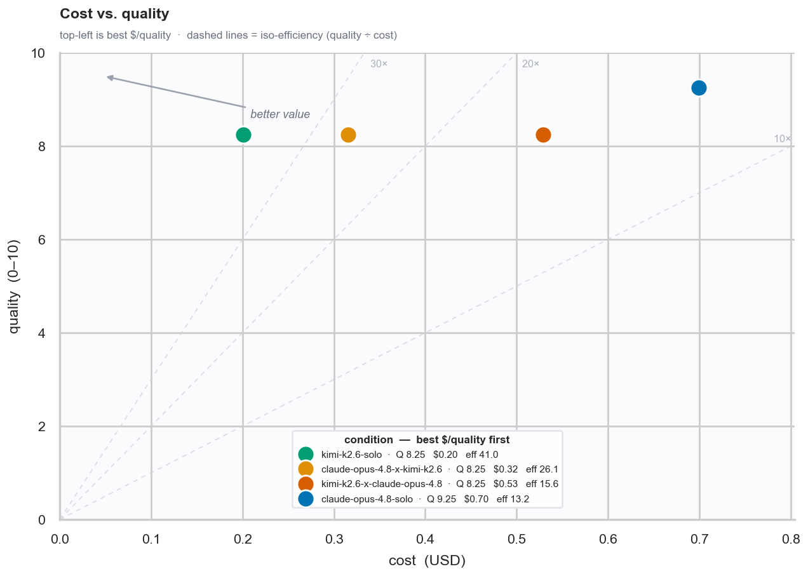
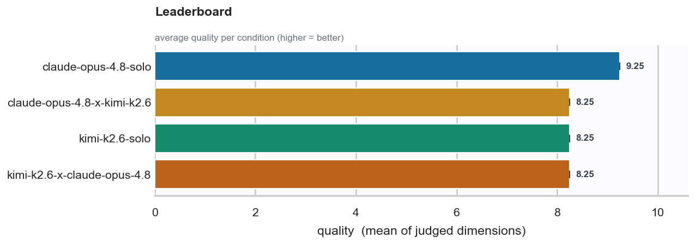
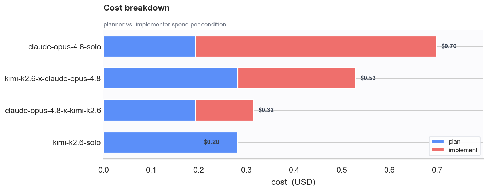
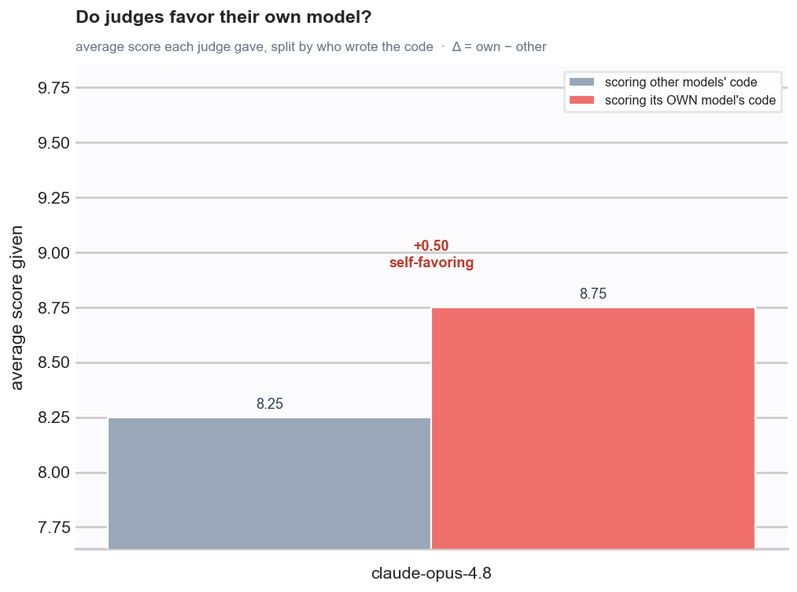

duobench is an agent skill that benchmarks planner × implementer LLM pairings on real GitHub issues, judges every fix, and charts quality per dollar.
duobench is not a CLI — it's a skill for coding agents (Claude Code and compatible harnesses). You install it once, then ask your agent in plain language to run a benchmark; the agent does the orchestration. For each pairing it runs this pipeline:
No monolithic CLI. Say "benchmark opus and kimi on issue #4041 of pallets/flask" and the agent launches, gates, and aggregates every job.
The implementer commits locally only — git/gh safety wrappers and remote removal make pushes and PRs impossible.
Every run ends with results.json, inspectable worktrees + commits, and a set of consistent seaborn charts.
npx skills add alejandro-ao/duobenchYou'll need uv, git + an authenticated gh,
tmux, and pi with your model providers configured —
see setup details.
With the skill installed, prompts like these trigger a benchmark:
The agent shows you the issue, the pairing matrix, and the job count before spending money, then runs plan → implement → judge jobs in tmux and ends by rendering the charts. Everything is resumable from disk if you come back later.
Want to script it without an agent, benchmark issues from other repos, or customize the plots? It's all in the documentation.
Charts from a real run on pallets/flask#4041 comparing
opus-4.8 × kimi-k2.6 pairings — plus results.json and the actual
commits in inspectable worktrees, so the plots are a decision aid, not the whole story.



